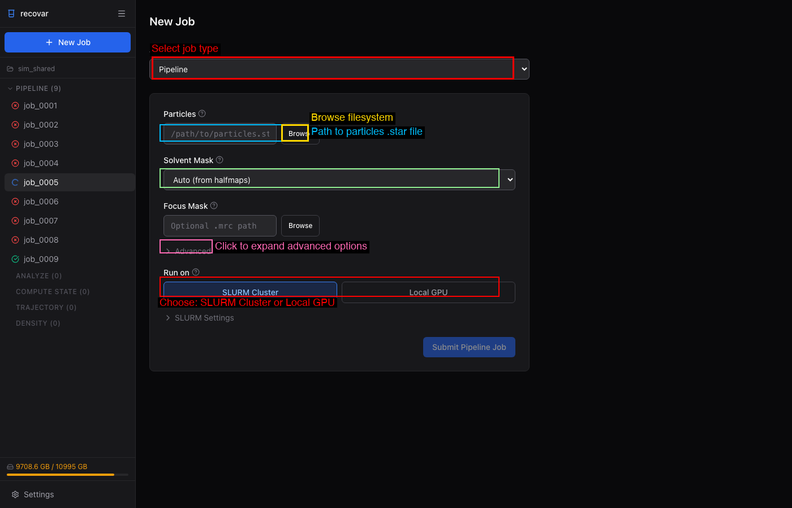

Quick Start¶
What you'll need¶
Before starting, make sure you have:
| Requirement | Details |
|---|---|
| Particle stack | A .star file (RELION) or .cs file (cryoSPARC) with CTF parameters |
| Mask | A .mrc binary mask covering your molecule of interest |
| GPU | NVIDIA GPU with 16+ GB VRAM (40+ GB recommended for large datasets) |
| RECOVAR installed | See Installation if you haven't set up RECOVAR yet |
Timing
A small dataset (~50k particles at 128px) takes about 10 minutes end-to-end. Larger datasets (500k+ particles at 256px) may take 30--60 minutes.
Run your first job¶
The easiest way to get started is through the web GUI.
1. Launch the GUI
This opens a browser window at http://localhost:5000.
2. Create a project and submit a pipeline job

- Click Create Project and choose a directory
- Click + New Job > Pipeline
- Browse to your particles file (
.staror.cs) - Select a mask (or use Auto/Sphere)
- Click Submit Pipeline Job
3. Analyze results
Once the pipeline completes, click Analyze this pipeline output in Suggested Next Steps. Set zdim (try 10) and click Submit Analyze Job.
4. Explore
The GUI shows eigenvalue spectra, UMAP scatter plots, and lets you click to generate volumes at any point in latent space. See the GUI Guide for details.
1. Interactive wizard (recommended for first-time users)
The wizard walks you through selecting input files, mask, downsampling, and other options, then runs the pipeline. Works over SSH.
2. Or run directly
recovar init_project my_project
cd my_project
# RELION
recovar pipeline particles.star --mask mask.mrc --project .
# cryoSPARC
recovar pipeline particles.cs --mask mask.mrc --datadir /path/to/cryosparc/project --project .
# Analyze
recovar analyze --zdim=10 --project .
3. View volumes
Open .mrc files in ChimeraX or any MRC viewer:
If you prefer explicit output directories (no project system):
Expected output after each step
After recovar init_project: Creates the project directory with a .recovar_project metadata file.
After recovar pipeline: Creates Pipeline/job_0001/ containing:
mean_half1.mrc,mean_half2.mrc-- half-map mean reconstructionscov_coeffs.pkl-- covariance matrix coefficientssvd/-- eigenvalues and eigenvectorspipeline_output.json-- run metadata and parameters
After recovar analyze: Creates Analyze/job_0001/ containing:
kmeans/center000.mrc,center001.mrc, ... -- cluster center volumesumap.pkl-- UMAP embedding coordinatesz_values.pkl-- per-particle latent coordinates
With downsampling¶
If your images are larger than ~256 pixels, downsample for faster processing:
This pre-downsamples images into the shared project cache on the first run and reuses that cache across matching project runs.
Project system¶
The project system is the standard RECOVAR workflow. Numbered job directories stay stable on disk (e.g. Pipeline/job_0001/, Analyze/job_0001/), while the CLI and GUI show human-readable job names from project metadata.
recovar init_project my_project
cd my_project
recovar pipeline particles.star --mask mask.mrc --project .
recovar analyze --zdim=10 --project .
recovar project_status
All commands accept --project <dir> to enable project mode. If you run from within a project directory, it is auto-detected.
Next steps¶
Now that you have results, here's where to go next:
- Tutorial -- full worked example with plots on EMPIAR-10076
- Web GUI -- launch the browser interface to interactively explore latent spaces and view 3D volumes
- Analyzing Results -- deep dive into k-means, trajectories, UMAP, and volume generation options
- Input Data -- supported formats and data preparation
- Downsampling -- when and how to downsample for optimal results